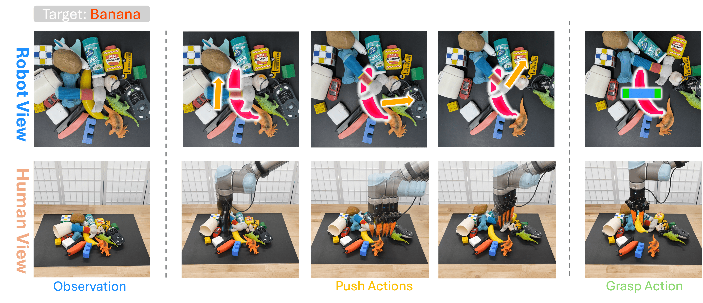

Introduction
Summary of EPG
In this paper, we introduce the \textbf{Equivariant PushGrasp (EPG)} Network, a novel framework for efficient goal-conditioned push-grasp policy learning in cluttered environments. EPG leverages inherent task symmetries to improve both sample efficiency and performance. Specifically, we model the pushing and grasping policies using $SE(2)$-equivariant neural networks, embedding rotational and translational symmetry as an inductive bias. This design substantially enhances the model's generalization and data efficiency. Furthermore, we propose a self-supervised training approach that optimizes the pushing policy with a reward signal defined as the change in grasping scores before and after each push. This formulation simplifies the training procedure and naturally couples the learning of pushing and grasping.

The target object, specified by human instruction, is highlighted with a red mask (e.g., a banana). At each step, the push action direction is represented by an arrow. Our method iteratively predicts and executes push actions to create sufficient space for grasping the target. The final grasp pose is shown as a blue rectangle, with green blocks indicating the gripper's fingers.
The key contribution of our work is a novel push-grasp framework for efficient target object retrieval. As illustrated above, our workflow consists of three key components: a CriticNet, a GraspNet, and a PushNet. At each time step, GraspNet and PushNet generate a grasp action and a push action with respect to the target object. CriticNet then evaluates the grasp action by assigning it a score. If the score exceeds a predefined threshold $tau$ or the maximum number of push attempts is reached, the grasp action is executed. Otherwise, the push action is executed, and the process repeats with an updated observation.
Two-Step Agent Learning
Previous works often rely on complex alternating training between grasp and push networks, which can lead to unstable convergence and difficulty in balancing learning dynamics. In contrast, we propose a simple two-step training process. First we train a universal, goal-agnostic GraspNet together with a CriticNet that evaluates predicted grasps and returns a score. Then, we use the difference in grasp scores before and after pushing, computed from the CriticNet, as a reward signal to train a goal-conditioned PushNet. This decoupled training strategy eliminates the need for alternating optimization and its scheduling-related hyperparameters, making the training more stable, controllable, and efficient.

Specifically, after the simulation scene is initialized, segmentation is first applied to obtain object masks. The Grasp Imagination Module stores the initial state and simulates grasp attempts for each mask sequentially. After each simulated grasp, the environment is restored to the initial state. The training episode for pushing begins once a grasp attempt fails. The PushNet $phi$ will predict the $Q$ value for all pushing actions, and an $epsilon$-greedy policy will be executed. After the push action, the Grasp Imagination Module simulates the grasp action again to assess the new grasp feasibility. If the grasp succeeds, the push action is considered optimal, and the reward is 1. If the grasp fails, we use an adaptive reward defined as the difference between the predicted grasp scores before and after the push estimated by $sigma$, as a good push should improve the grasp feasibility. The episode terminates when a simulated grasp succeeds or the maximum pushing attempts are reached. The system then moves on to the next target mask or re-initializes the scene if all masks are iterated.